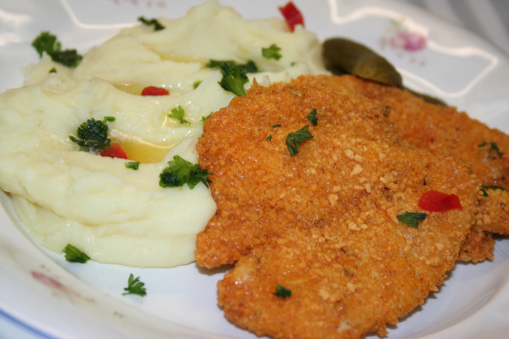

Chicken meat fried in breadcrumbs served with fries

Description:
Chicken meat fried in breadcrumbs served with fries
For this recipes you will need: Chicken meat breadcrumbs and some fries
Ingredients (4 portions):
-
500 g chicken (breast or thigh)
-
salt
-
grinded pepper
-
flour
-
breadcrumbs
-
2 eggs
-
100 ml of milk
-
frying oil
steps:
-
Cut the meat into slices. Then salt and pepper it on both sides.
-
We will prepare 3 deep plates. Pour plain flour into the first, beat two unboiled eggs without the shell into the second, add milk, a pinch of salt, a little pepper and mix well. Pour breadcrumbs into the third plate.
-
Wrap the meat thoroughly on both sides in the first plate, then in the second and finally in the third
-
Pour a sufficient amount of oil into the pan, heat it up and fry the cutlets.
Note by the author of the recipe:
We can easily prepare breadcrumbs at home. Put the old hard rolls (but not the moldy ones) into a blender and blend them into a powder. This can be done by hand on a hand grater.
back